Machine Learning Demistified
by Mikey Fennelly. November 26th, 2023
Machine Learning (ML) is a transformative field within the broader realm of artificial intelligence (AI) that empowers computers to learn from data without explicit programming. This introductory chapter lays the groundwork for understanding the significance of ML in contemporary society.
Importance in Today's World
In an era where data has become the new currency, machine learning emerges as a key player in extracting meaningful insights from vast datasets. From healthcare to finance, marketing to autonomous vehicles, ML's applications are pervasive and diverse.

Tracing the roots of machine learning unveils a fascinating journey. This chapter explores the early concepts and pioneers who laid the foundation for the ML landscape we witness today.
Milestones in Machine Learning Development
Highlighting pivotal moments in ML history, this section underscores the significant breakthroughs that shaped the evolution of machine learning, from the conception of basic algorithms to the rise of sophisticated neural networks.
...
(Continue this structure throughout the essay, providing in-depth insights, case studies, and practical applications of machine learning concepts. Address challenges, ethical considerations, and future trends to offer readers a comprehensive understanding of the subject.)
In this concluding chapter, we revisit the fundamental concepts covered throughout the essay, reinforcing the reader's understanding of the diverse facets of machine learning.
The Ongoing Journey of Machine Learning
As we conclude this extensive exploration, we acknowledge that the journey of machine learning is ongoing. The field continues to evolve, with new challenges, ethical considerations, and breakthroughs on the horizon. Machine learning, once a complex and mysterious realm, stands demystified, inviting both experts and enthusiasts to contribute to its growth and application.